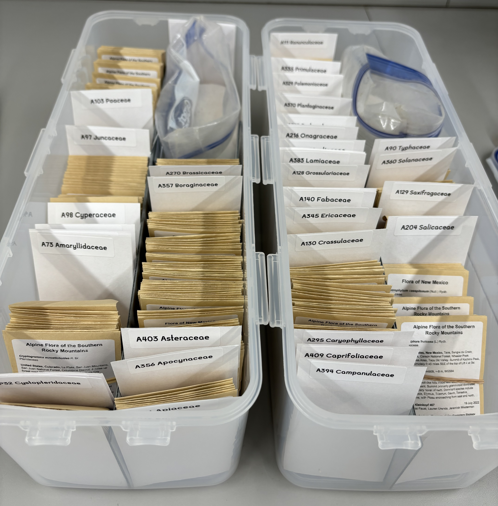
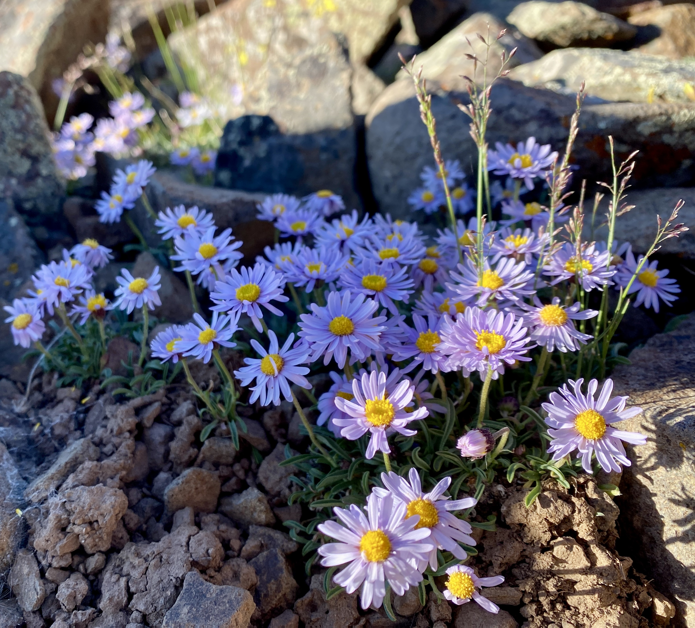
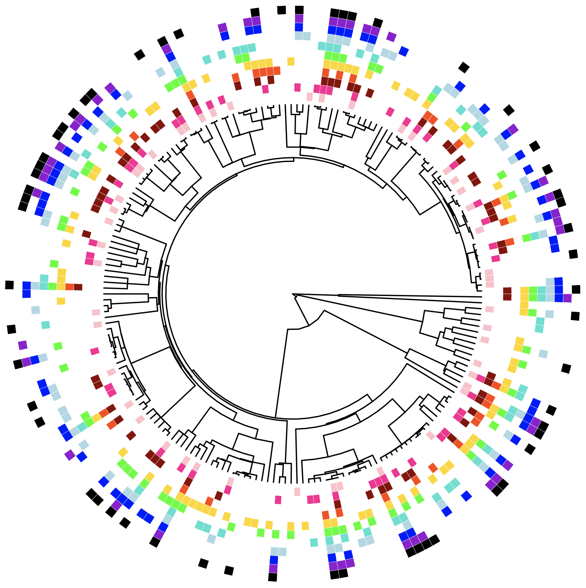
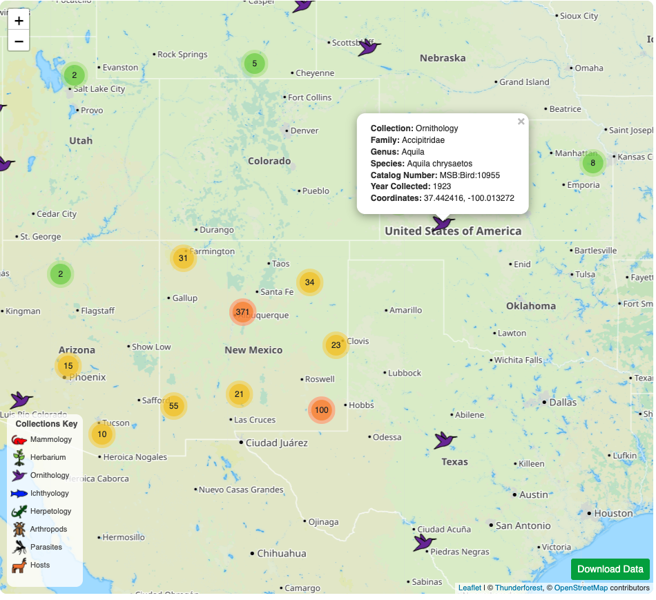
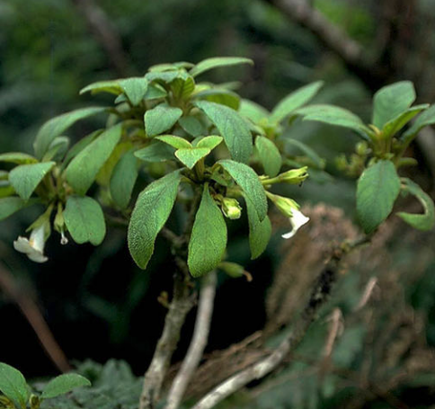
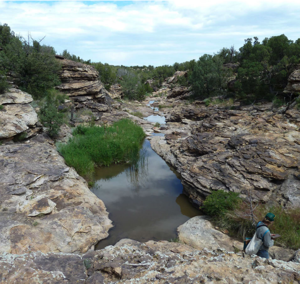

Current projects

Silica tissue library standards
2022 - Present | Marx Lab | Museum of Southwestern Biology
Herbaria are vital to documenting and understanding patterns of plant biodiversity. Silica tissue collection is standard practice at most herbaria, but there are no standards for physical and digital curation and management of these tissues, even though they contain high quality genomic DNA and are used for molecular systematics, population genetics, and all kinds of other molecular research. We are working with regional herbarium curators and collections managers to build workflows and protocols that reflect best practices for curating these tissues and making them accessible to student and affiliated researchers.

Phylogenomics and biogeography of Erigeron
2022 - Present | Marx Lab | University of New Mexico
The origins of the alpine flora in North America have been debated for centuries, with Charles Darwin positing that our alpine floras are of arctic origin, and with others suggesting a non-arctic lowland origin for these floras. Today, the same questions remain, in part because we lack phylogenetic data for clades that are well-represented in the alpine, arctic, and non-arctic lowlands of North America. I aim to reconstruct a phylogeny for Erigeron (subtribe Conyzinae: Astereae: Asteraceae) using a species-tree approach, and use this phylogeny to infer the origins of alpine lineages in this group.

Alpine plant community turnover
2021 - Present | Marx Lab | University of New Mexico
Alpine plant communities are among those most imperiled by climate change. To understand how alpine plant communities across Western North America will respond to continued warming of our planet, it is imperative that we understand the factors that drive community assembly in these alpine habitats. As part of the 50 Peaks Project, we sampled 17 alpine plant communities in the Southern Rocky Mountains, along with many other alpine plant communities sampled by collaborators in Colorado, Idaho, Washington State, Wyoming, and British Columbia. We take a taxonomic and community phylogenetic approach to better understand how precipitation, temperature, geology, and glacial cycles drive the biodiversity patterns we see today.
Past projects

Mapping museum collections
2022 | Internet Mapping | University of New Mexico
We built a web app to map the collections at the Museum of Southwestern Biology as part of a course called "Internet Mapping" at the University of New Mexico. These collections data are from 2021, so recent collections have not yet been incorporated. Explore and filter collections by division, taxa, and collection year.
This application opens in a new browser tab.

Diversification of Hawaiian Cyrtandra
2014 - 2016 | Roalson Lab | Washington State University
The Hawaiian Islands are one of the most isolated oceanic island systems in the world, and act as a "natural laboratory" where theories of ecology and evolution can be tested. Cyrtandra (Gesneriaceae) likely arrived in Hawaii shortly after its formation around 4.7 mya and rapidly radiated through the archipelago as islands arose. We used a phylogenomics approach to reconstruct relationships for roughly half of the known Hawaiian species and find evidence of a stepping-stone model of dispersal, high levels of incomplete lineage sorting, and hybridization. Additionally, this study helped in describing a new species!
Read our study here.

Purgatory plant anomalies
2014 - 2016 | Tripp Lab | University of Colorado
The Purgatory Watershed in southeastern Colorado and northeastern New Mexico, a region composed of deep canyons, eroded mesas, and shortgrass plains, sits at the crossroads of biodiversity of the Rocky Mountains, Great Plains, and Chihuahuan Desert. Despite a dearth of biological research in the area, it is home to a number of unique land formations and endemic organisms. Prompted by herbarium and field observations of aberrant forms of plant species, we conducted a study comparing morphometric and genetic data from the Purgatory to non-Purgatory populations. We find evidence for divergence in Purgatory populations of Amorpha nana, and encourage continued exploration and research in this unique and understudied area.
Read our study here.